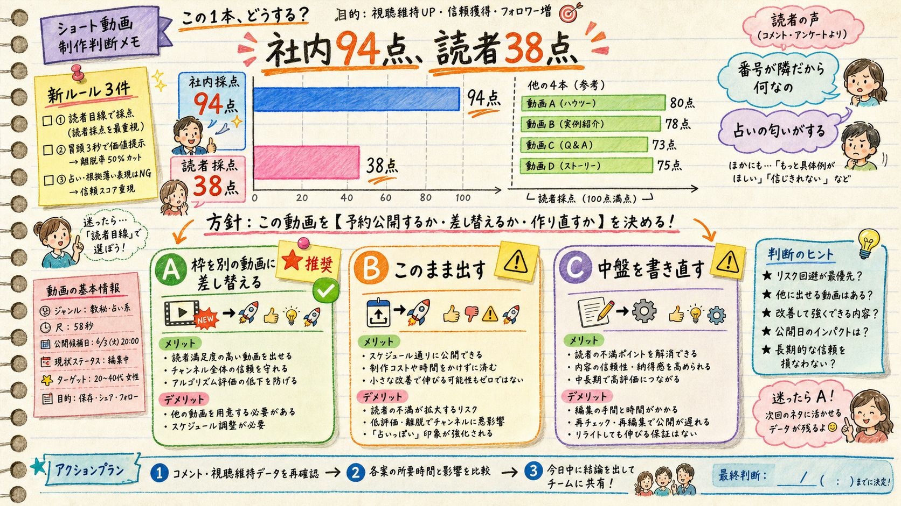

「新ルールとかハーネスがあるから確認して」の結果です。確認したら、聞こうとしていた質問（縦ゲートの迂回フラグ）はもう答えが出ていて、代わりに別の判断が要る状態になっていました。
--allow-legacy-vertical は sh45（7/27）・sh46（7/29）が同じ理由で既に通っている確立ルート。today.mjs の今日の1件目も「完成済みショートを公開せよ」。
| いつ | 何が変わったか | ep48ショートへの影響 |
|---|---|---|
| 7/31 | ショート週4枠を4型ローテへ（診断／相談／ランキング／高速）。「隣の卦型」は control 扱いで新規制作停止 | sh48-kan-tonari はまさにその「隣の卦型」。作り終わっている最後の1本にあたる |
| 8/1 | shorts-precheck.sh 新設（台本→音声のみで尺と発音を1分で実測） |
完成済みなので該当なし（QAは通過済み） |
| 8/2 | 「基準を見ない読者ゲート」新設。採点表も合格ラインも知らないfork1体に、通勤電車の視聴者として反応させる | 未通過だった → 今回回した → 38点 |
| ショート | 型 | 社内fork採点 | 読者ゲート | 3秒で止まるか | 最後まで観るか |
|---|---|---|---|---|---|
| sh48-jusoudan | 相談引用型 | — | 80 | ✅ | ✅ |
| sh47-soneki-shindan | 二択診断型 | — | 74 | ✅ | ✅ |
| sh49-tsumi-top3 | ランキング型 | — | 74 | ✅ | ✅ |
| sh50-kisei-fast | 高速テンポ型 | — | 73 | ✅ | ✅ |
| sh48-kan-tonari | 隣の卦型（control） | 94 | 38 | ✅（冒頭は刺さっている） | ❌ 20秒で離脱 |
冒頭は正直ドキッとした。「迷ったのは、帰り道です」ってやつ、まさに俺。ここは指止まった。アシタカの話も、まあ分かる、あの映画のあの感じね、で付いていけた。
でもそのあと急に易経の授業が始まって、しかも「二十番目」「二十一番目」って番号の話をされて、正直どうでもよくなった。番号が隣だから何なの、って。棒が四本弱くて二本強い、って言われても画面の図がすごいのかどうか俺には分からんし、判定できないものを「証拠」みたいな顔で出されると逆に警戒する。占いの人が「ここに出てます」って言うのと同じ匂い。
決定的なのは「ぜいごう」。音で聞いても何のことか分からん漢字を、しかも一回しか出てこない言葉を、真ん中の一番大事なところに置くの無理がある。
あと最後まで見た人には悪いけど、たぶんオチが「ちゃんと見てから決めよう」でしょ。それ易経いらなくない？ 冒頭の一言だけで十分刺さってたのに、途中で他人の権威を借りに行った感じがして白けた。冒頭を書いた人と、真ん中を書いた人が別人に思える。
| 日付 | 現在の予約 | 型 |
|---|---|---|
| 8/05 | sh45-hou-tonari | 隣の卦型 |
| 8/08 | sh46-gon-tonari | 隣の卦型 |
| 8/15 | sh48-kan-tonari | 隣の卦型 |
| — | sh47 / sh48-jusoudan / sh49 / sh50（完成済み） | 4型ローテ＝現行方針。まだ1枠も取れていない |
現行方針の4本が完成しているのに枠がゼロ、退役した型が枠を持っている、という状態です。8/28に型別プールで判定する予定なので、4型の実データが早く要るのも事実です。